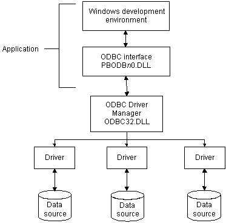
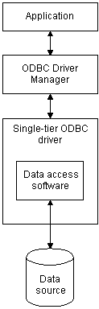
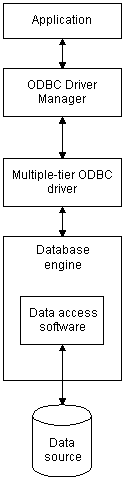

You can access a wide variety of ODBC data sources in PowerBuilder. This section describes what you need to know to use ODBC connections to access your data in PowerBuilder.
 ODBC drivers and data sources For a complete list of the ODBC drivers supplied
with PowerBuilder and the data sources they access, see "Database
Interfaces" in online Help.
ODBC drivers and data sources For a complete list of the ODBC drivers supplied
with PowerBuilder and the data sources they access, see "Database
Interfaces" in online Help.
Open Database Connectivity (ODBC) is a standard application programming interface (API) developed by Microsoft. It allows a single application to access a variety of data sources for which ODBC-compliant drivers exist. The application uses Structured Query Language (SQL) as the standard data access language.
The ODBC API defines the following:
Applications that provide an ODBC interface, like PowerBuilder, can access data sources for which an ODBC driver exists. An ODBC data source driver is a dynamic link library (DLL) that implements ODBC function calls. The application invokes the ODBC driver to access a particular data source.
Using the ODBC interface, PowerBuilder can connect, save, and retrieve data in both ANSI/DBCS and Unicode databases but does not convert data between Unicode and ANSI/DBCS. When character data or command text is sent to the database, PowerBuilder sends a Unicode string. The driver must guarantee that the data is saved as Unicode data correctly. When PowerBuilder retrieves character data, it assumes the data is Unicode.
A Unicode database is a database whose character set is set to a Unicode format, such as UTF-8, UTF-16, UCS-2, or UCS-4. All data must be in Unicode format, and any data saved to the database must be converted to Unicode data implicitly or explicitly.
A database that uses ANSI (or DBCS) as its character set might use special datatypes to store Unicode data. Columns with these datatypes can store only Unicode data. Any data saved into such a column must be converted to Unicode explicitly. This conversion must be handled by the database server or client.
The following ODBC connectivity features are available in PowerBuilder:
When you access an ODBC data source in PowerBuilder, your connection goes through several layers before reaching the data source. It is important to understand that each layer represents a separate component of the connection, and that each component might come from a different vendor.
Because ODBC is a standard API, PowerBuilder uses the same interface to access every ODBC data source. As long as a driver is ODBC compliant, PowerBuilder can access it through the ODBC interface to the ODBC Driver Manager. The development environment and the ODBC interface work together as the application component.
Figure 2-1 shows the general components of an ODBC connection.

Table 2-1 gives the provider and a brief description of each ODBC component shown in the diagram.
| Component | Provider | What it does |
|---|---|---|
| Application | Sybase | Calls ODBC functions to submit SQL statements,
catalog requests, and retrieve results from a data source. PowerBuilder uses the same ODBC interface to access all ODBC data sources. |
| ODBC Driver Manager | Microsoft | Installs, loads, and unloads drivers for an application. |
| Driver | Driver vendor | Processes ODBC function calls, submits
SQL requests to a particular data source, and returns results to
an application. If necessary, translates an application's request so that it conforms to the SQL syntax supported by the back-end database. See "Types of ODBC drivers". |
| Data source | DBMS or database vendor | Stores and manages data for an application. Consists of the data to be accessed and its associated DBMS, operating system, and (if present) network software that accesses the DBMS. |
When PowerBuilder is connected to an ODBC data source, you might see messages from the ODBC driver that include the words single-tier or multiple-tier. These terms refer to the two types of drivers defined by the ODBC standard.
A single-tier ODBC driver processes both ODBC functions and SQL statements. In other words, a single-tier driver includes the data access software required to manage the data source file and catalog tables. An example of a single-tier ODBC driver is the DataDirect dBASE ODBC driver.

A multiple-tier ODBC driver processes ODBC functions, but sends SQL statements to the database engine for processing. Unlike the single-tier driver, a multiple-tier driver does not include the data access software required to manage the data directly.
An example of a multiple-tier ODBC driver is the Sybase ASA driver.

You can access data in PowerBuilder Enterprise or PowerBuilder Professional with ODBC drivers obtained from vendors other than Sybase, such as DBMS vendors.
An ODBC driver obtained from another vendor must meet certain conformance requirements to ensure that it works properly with PowerBuilder. This section describes how to make sure your driver meets these requirements.
PowerBuilder can access many data sources for which ODBC-compliant drivers exist. However, ODBC drivers manufactured by different vendors might vary widely in the functions they provide.
To ensure a standard level of compliance with the ODBC interface, and to provide a means by which application vendors can determine whether a specific driver provides the functions they need, ODBC defines conformance levels for drivers in two areas:
ODBC defines three API conformance levels, in order of increasing functionality:
 To ensure the proper ODBC driver API conformance
level:
To ensure the proper ODBC driver API conformance
level:
Sybase recommends that the ODBC drivers you use with PowerBuilder meet Level 1 or higher API conformance requirements. However, PowerBuilder might also work with drivers that meet Core level API conformance requirements.
ODBC defines three SQL grammar conformance levels, in order of increasing functionality:
 To ensure the proper ODBC driver SQL conformance
level:
To ensure the proper ODBC driver SQL conformance
level:
Sybase recommends that the ODBC drivers you use with PowerBuilder meet Core or higher SQL conformance requirements. However, PowerBuilder might also work with drivers that meet Minimum level SQL conformance requirements.
There are two ways that you can obtain ODBC drivers for use with PowerBuilder:
If you are using PowerBuilder Desktop, you can access data using only the ODBC drivers that are shipped with the product. For a list of these drivers, see ODBC drivers in the online Help. Unlike PowerBuilder Enterprise and PowerBuilder Professional, with PowerBuilder Desktop you cannot use an ODBC driver obtained from another vendor.
If you already have version 2.0 or later of any of the following Microsoft ODBC drivers installed and properly configured, you can use these drivers with PowerBuilder Desktop to connect to your data source:
 Using DataDirect drivers is recommended PowerBuilder Desktop comes with DataDirect ODBC drivers for
several of these data sources. You should use the DataDirect drivers
whenever possible to access these data sources.
Using DataDirect drivers is recommended PowerBuilder Desktop comes with DataDirect ODBC drivers for
several of these data sources. You should use the DataDirect drivers
whenever possible to access these data sources.
To ensure that you have up-to-date and accurate information about using your ODBC driver with PowerBuilder, get help as needed by doing one or more of the following:
| To get help on | Do this |
|---|---|
| Using the ODBC Data Source Administrator | Click the Help button on each tab. |
| Completing the ODBC setup dialog box for your driver | Click the Help button (if present) in the ODBC setup dialog box for your driver. |
| Using ASA | See the ASA documentation. |
| Using an ODBC driver obtained from a vendor other than Sybase | See the vendor's documentation for that driver. |
| Troubleshooting your ODBC connection | Check for a technical document that describes how to connect to your ODBC data source. Updated information about connectivity issues is available on the Sybase Customer Service and Support Web site . |